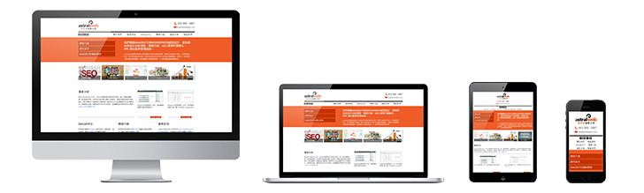

响应式网页设计
May 8,2011 in Category
响应式网站设计(Responsive Web design)的理念是：集中创建页面的图片排版大小，可以智能地根据用户行为以及使用的设备环境（系统平台、屏幕尺寸、屏幕定向等）进行相对应的布局。 响应式网站设计(Responsive Web design)的理念是：页面的设计与开发应当根据用户行为以及设备环境(系统平台、屏幕尺寸、屏幕定向等)进行相应的响应和调整。具体的实践方式由多方面组成，包括弹性网格和布局、图片、CSS media query的使用等。无论用户正在使用笔记本还是iPad，我们的页面都应该能够自动切换分辨率、图片尺寸及相关脚本功能等，以适应不同设备；换句话说，页面应该有能力去自动响应用户的设备环境。响应式网页设计就是一个网站能够兼容多个终端——而不是为每个终端做一个特定的版本。这样，我们就可以不必为不断到来的新设备做专门的版本设计和开发了。
vimeo高清视频
- 工具栏
- WordPress(3)
- 设计(23)
- 设计(18)
图片分享网站